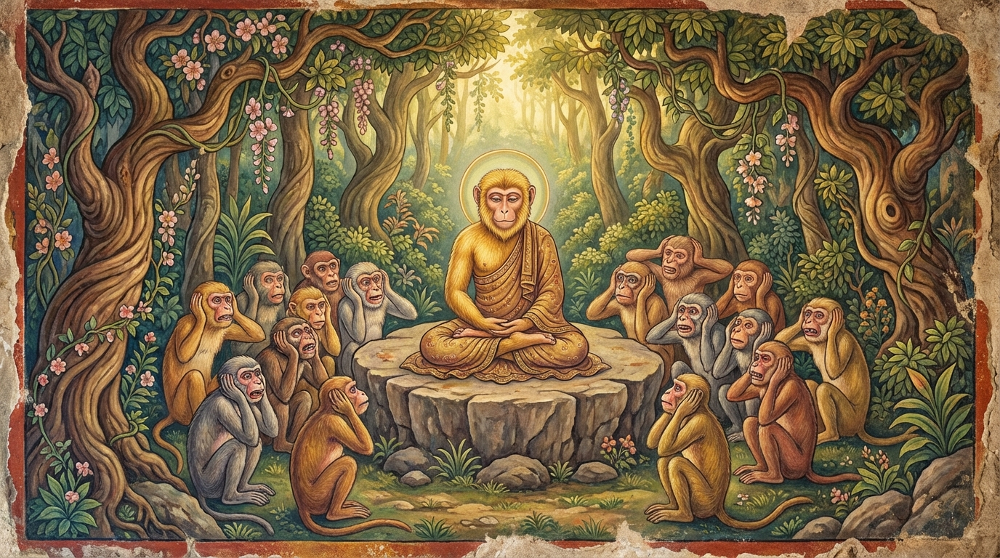

9. ගරහිත ජාතකය (219)
“හිරඤ්ඤං මෙ සුවණ්ණං මෙ” (මේ මාගේ මසුරන් ය, මේ මාගේ රන් ය) යන මේ ගාථා පාඨය මුල් කරගෙන බුදුරජාණන් වහන්සේ ජේතවනාරාමයෙහි වැඩවසන සමයෙහි, සසුනෙහි නොඇලුණු, කලකිරුණු එක්තරා භික්ෂුවක් අරබයා මෙය දේශනා කළ සේක. මේ භික්ෂුවට (කමටහන් වශයෙන්) වෙන් කොට ගත් අරමුණක් නොතිබුණි. ශාසනයෙහි නොඇලී වසන ඒ භික්ෂුව, (අන් භික්ෂූන් විසින්) බුදුරජාණන් වහන්සේ වෙත කැඳවාගෙන එන ලදී. “මහණ, ඔබ සසුනෙහි කලකිරුණු බව සැබෑ ද?” යි ශාස්තෲන් වහන්සේ විමසූ විට, “එසේය ස්වාමීනි” යි ඔහු පිළිතුරු දුන්නේය. “කුමන කරුණක් නිසා දැ?” යි ඇසූ විට, “කෙලෙස් වසයෙන්” යැයි හෙතෙම පැවසීය. එවිට බුදුරජාණන් වහන්සේ, “මහණ, මේ කෙලෙස් නම් පෙර තිරිසන් සතුන් විසින් පවා ගරහන ලද්දකි. ඔබ මෙබඳු ශාසනයක පැවිදිව, කුමක් හෙයින් තිරිසන් සතුන් පවා ගැරහු කෙලෙස් වසයෙන් කලකිරුණෙහි දැ?” යි වදාරා අතීත කථාව ගෙනහැර දැක්වූ සේක.
අතීතයෙහි බරණැස් නුවර බ්රහ්මදත්ත රජු රාජ්ය කරන සමයේ, බෝධිසත්ත්වයෝ හිමාල වනයෙහි වඳුරු යෝනියක උපන්හ. එක් වැදි පුත්රයෙක් ඒ වඳුරා අල්ලාගෙන අවුත් රජතුමාට දුන්නේය. ඒ වඳුරා බොහෝ කල් රජගෙදර වසමින් යහපත් වත්පිළිවෙත් ඇත්තෙක් විය; මිනිස් ලොව පවතින ක්රියා පටිපාටිය බොහෝ දුරට දැනගත්තේය. රජතුමා වඳුරාගේ වත්පිළිවෙත් ගැන පැහැදී, වැද්දා කැඳවා, “මේ වඳුරා අල්ලාගත් ස්ථානයෙහි ම මුදා හරින්න” යැයි අණ කළේය. වැද්දා ද එසේ කළේය. වඳුරු සමූහයා බෝසතාණන් වහන්සේ පැමිණි බව දැන, ඔහු දැකීම පිණිස මහත් ගල්තලාවක් මතට රැස්වී, බෝසතාණන් වහන්සේ සමඟ සතුටු සාමීචි කථා කොට, “යහළුව, මෙපමණ කලක් කොහි වාසය කළෙහි ද?” යි විමසූහ. “බරණැස් රජ මාලිගයේ ය” යි ඔහු කීවේය. “එසේ නම් කෙසේ නිදහස් වූයේ ද?” යි ඇසූහ. “රජතුමා මා සුරතල් වඳුරෙකු කොට තබාගෙන, මගේ වත්පිළිවෙත් කෙරෙහි පැහැදී මා මුදා හැරියේය” යි කීය.
ඉක්බිති ඒ වඳුරෝ, “ඔබ මිනිසුන් අතර පවතින ගති පැවතුම් දන්නෙහිය. අපට ද ඒ ගැන කියනු මැනව; අපි ඒවා අසන්නට කැමැත්තෙමු” යි කීහ. “මගෙන් මිනිසුන්ගේ ක්රියා කලාපයන් ගැන නොඅසන්න” යි බෝසතාණෝ කීහ. “කියනු මැනව, අපි අසනු කැමැත්තෙමු” යි ඔවුහු නැවතත් කීහ. එවිට බෝධිසත්ත්වයෝ, “මිනිසුන් වන ක්ෂත්රියයෝ ද බ්රාහ්මණ මෙය මගේ ය, මෙය මගේ යැයි කියති. දේවල් ඇති වී නැති වන බැවින් අනිත්ය ස්වභාවය නොදනිති. දැන් ඒ අන්ධ බාලයන්ගේ ක්රියා කලාපය අසව්” යැයි පවසා මේ ගාථාවන් වදාළහ:
“මේ මාගේ මසුරන් ය, මේ මාගේ රන් ය කියමින් ආර්ය ධර්මය නොදන්නා නුවණ නැති මිනිසුන්ගේ දිවා රෑ දෙකෙහි පවත්නා කථාව මෙයම ය.”
“නිවසක් පාසා ගෘහපතියෝ දෙදෙනෙක් වෙති. ඔවුන් අතරින් එකෙක් (බිරිඳ) රැවුල නැත්තේය; එල්ලෙන පියයුරු ඇත්තේය; ගෙතූ කෙස් වැටි ඇත්තේය; විදින ලද කන් ඇත්තේය. (ස්වාමියා විසින්) බොහෝ ධනය දී මිලට ගන්නා ලද්දේය. හෙතෙම (ඒ බිරිඳ) ජනයාට වචන නමැති කටුවෙන් අනියි.”
යනුවෙන් මේ ගාථාවන් පැවසූහ.
එහි හිරඤ්ඤං මෙ සුවණ්ණං මෙ යනු දේශනාවේ මාතෘකාව පමණි. මේ පද දෙකෙන් දසවිධ රත්නයන් ද, හැල්, වී, යව ආදී පූර්වාන්න කෙත් වතු ද, මුං, මෑ, තල ආදී අපරාන්න කෙත් වතු ද, දෙපා සිව්පා සතුන් ද යන මේ සියල්ල දක්වමින් “මේවා මගේ ය, මේවා මගේ ය” යි කීවේ ය. එසා රත්තිං දිවා කථා යනු මෙය මිනිසුන්ගේ දිවා රෑ දෙකෙහි නිතර පවත්නා කථාව යි. ඔවුහු “පංචස්කන්ධය අනිත්ය ය”යි කියා හෝ “ඇති වී නැති වී යන්නේ ය”යි කියා හෝ වෙනත් දෙයක් නොදනිති; මෙසේ මගේ ය, මගේ යයි කියමින් වැලපෙමින් හැසිරෙති. දුම්මෙධානං යනු ප්රඥාව නැතියවුන්ගේ බවයි. අරියධම්මං අපස්සතං යනු බුද්ධාදී ආර්යයන් වහන්සේලාගේ ධර්මය හෝ, නිදොස් වූ නව ලෝකෝත්තර ධර්මය හෝ නොදකින්නවුන්ට ඇත්තේ මේ කථාව ම ය. “අනිත්ය ය” කියා හෝ “දුක ය” කියා හෝ වෙනත් කථාවක් ඔවුන්ට ඇත්තේම නැත.
ගහපතයො යනු නිවසෙහි අධිපති වූවෝ ය. එකො තත්ථ (එහි එක් අයෙක්) යනු නිවසේ අධිපති වූ මේ දෙදෙනා අතුරින් එක් අයෙකි; මෙය ස්ත්රිය අරබයා කියයි. එහි වෙණිකතො යනු ගෙතූ කොණ්ඩය ඇති හෙවත් නොයෙක් ආකාරයෙන් සකස් කරන ලද කෙස් කළඹ ඇති බවයි. අථො අඞ්කිතකණ්ණකො යනු විදින ලද කන් ඇති හෙවත් සිදුරු කළ කන් ඇති බවට, එල්ලෙන කන් ඇති බව ගලපා කීයේ ය. කීතො ධනෙන බහුනා යනු රැවුල නැති, එල්ලෙන පියයුරු ඇති, ගෙතූ කොණ්ඩය ඇති, විදින ලද කන් ඇති මේ තැනැත්තිය, මව්පියන්ට බොහෝ ධනය දී මිලට ගෙන, සරසා, ආභරණ පළඳවා, යානයකට නංවා මහත් පිරිවරින් ගෙදරට ගෙනෙන ලද්දී ය. සො තං විතුදතෙ ජනං යනු ඒ ගෘහපතිනිය පැමිණි දින සිට පටන් ගෙන, ඒ නිවසේ සිටින දාස කම්කරුවන් ආදී ජනයාට “එම්බා දුෂ්ට දාසය, දුෂ්ට දාසිය, තොපි මෙය නොකරව්” යැයි කියමින් මුවින් නිකුත් වන වචන නමැති ආයුධයෙන් අනියි; පහර දෙයි. ස්වාමියා මෙන් වී කටයුතු විමසයි. මෙසේ “මිනිස් ලොව පවතින්නේ අතිශයින්ම අයෝග්ය දෙයකි” යි කියමින් මිනිස් ලොවට ගැරහී ය.
එය අසා සියලු වඳුරෝ, “නොකියව, නොකියව! අපි නුසුදුසු දෙයක් ඇසුවෙමු” යි කියමින් දෑතින් කන් තදින් වසා ගත්හ. “මේ ස්ථානයේ දී අප විසින් මේ අයෝග්ය දෙය අසන ලදී” යැයි කියා ඒ ස්ථානයට ද ගරහා වෙනත් තැනකට ගියහ. ඒ ගල්තලාව ද “ගරහිත පිට්ඨි පාෂාණය” (ගැරහුම් කළ ගල්තලාව) යනුවෙන් ප්රකට විය.

බුදුරජාණන් වහන්සේ මේ ධර්ම දේශනාව ගෙනහැර දක්වා, චතුරාර්ය සත්යය ප්රකාශ කොට ජාතක කථාව නිමවා වදාළ සේක. සත්ය දේශනාව අවසානයෙහි ඒ භික්ෂුව සෝවාන් ඵලයෙහි පිහිටියේය. “එකල වඳුරු සමූහයා මේ බුද්ධ පිරිස වූහ; වඳුරු රජු වනාහි මම ම වූවෙමි” යි වදාළ සේක.
නව වැනි වූ ගරහිත ජාතක වර්ණනාව යි.